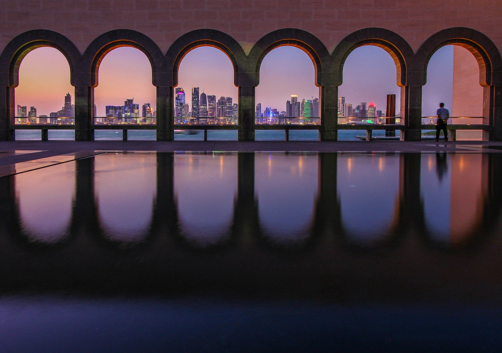
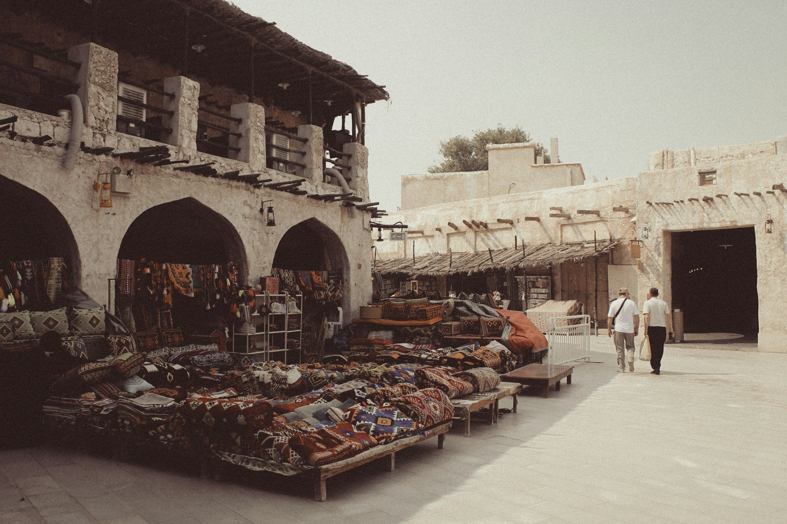
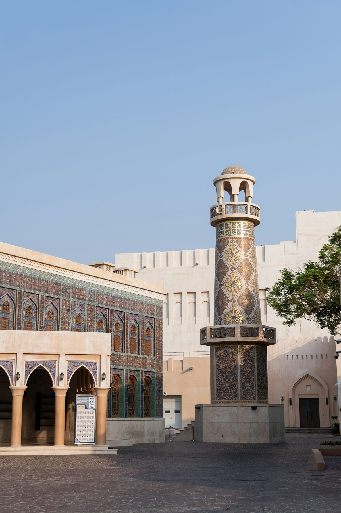
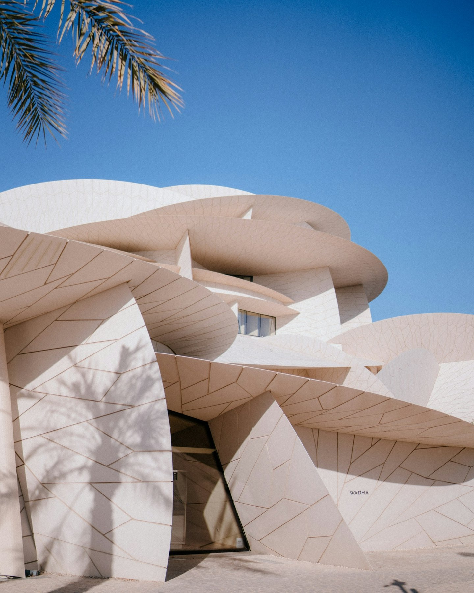
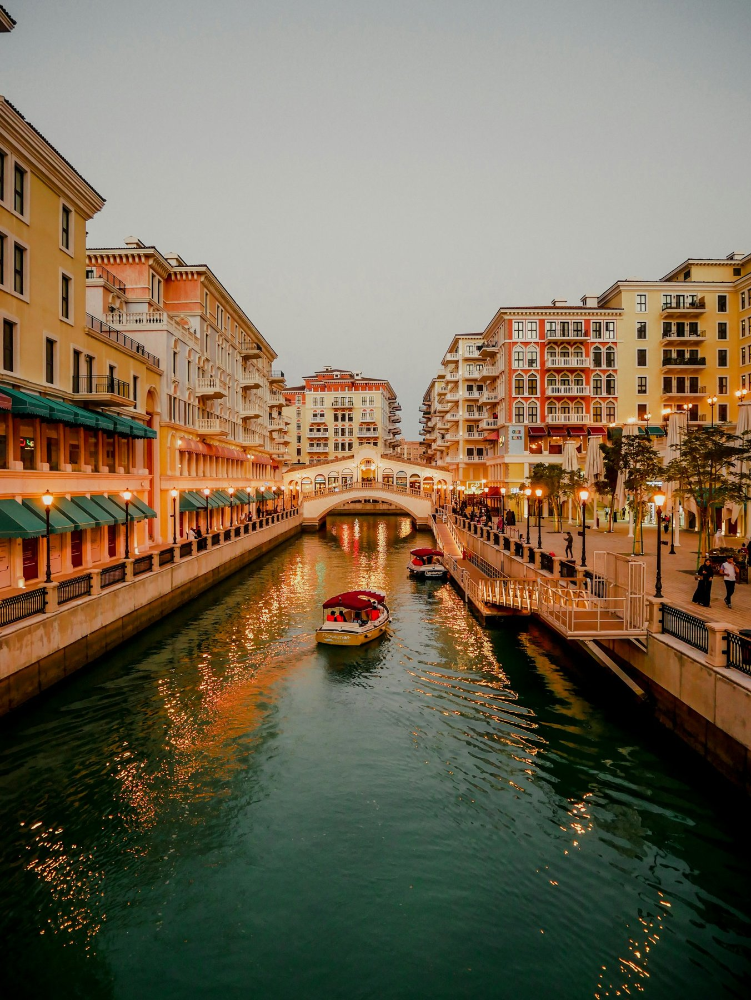
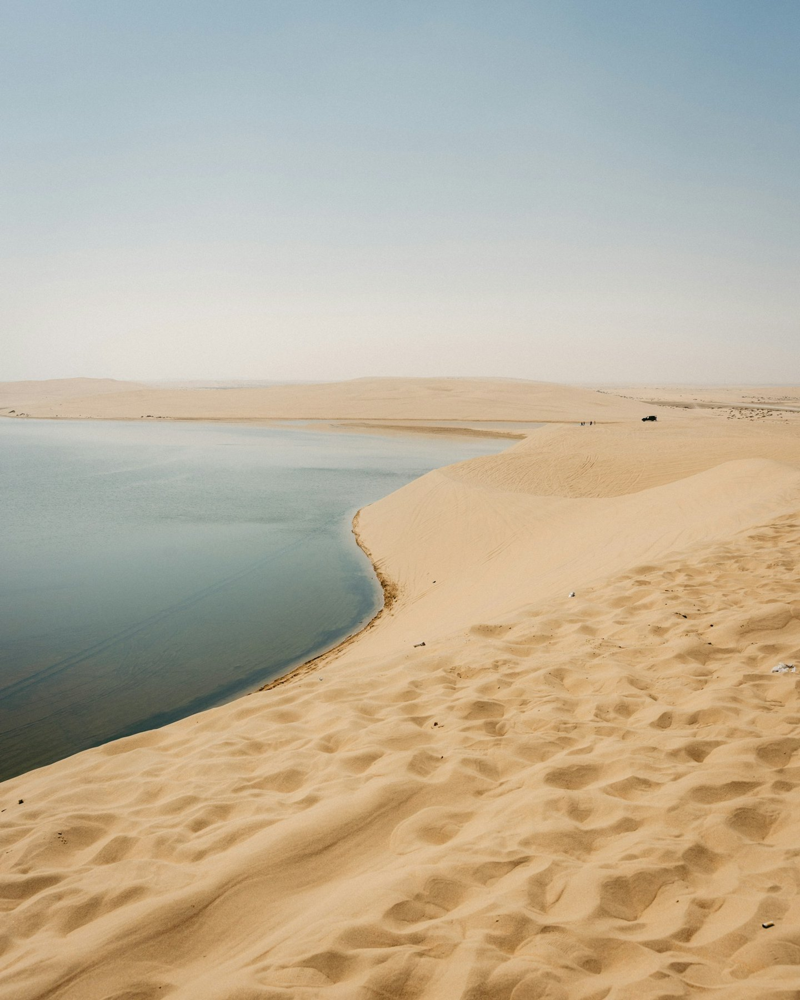

Culture & Heritage
Explore traditional markets, museums and spaces that bring Qatari culture to life.

Discover Qatar
A journey from Doha's modern skyline and traditional markets to desert dunes and the sea.
Explore QatarTradition Meets Tomorrow
Start in Doha, where striking contemporary buildings stand close to the lanes of Souq Waqif. Take time for the city's art and architecture, from Katara Cultural Village to the National Museum of Qatar.
Follow the waterfront to The Pearl's colourful canals, then leave the city behind for the dunes and shoreline of southern Qatar. We can shape the journey around the places and experiences that interest you most.
Explore traditional markets, museums and spaces that bring Qatari culture to life.
Enjoy skyline views, waterfront walks and the canals of The Pearl.
See the changing colours of the dunes and the remarkable meeting of sand and sea.
Places to Experience
01

02

03

04

05

06
Your Qatar Journey
Tell us your dates, interests and preferred travel style. Our team will prepare a personalized Qatar proposal.